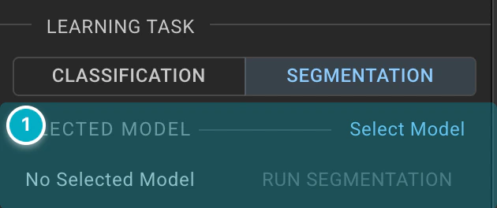
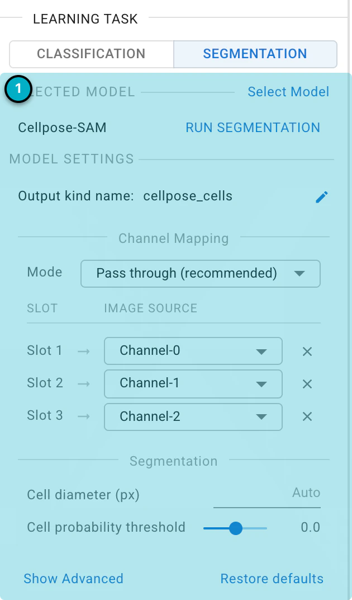
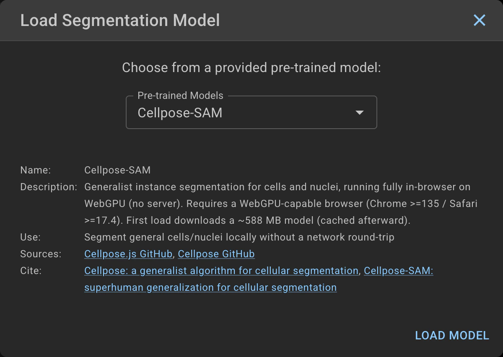
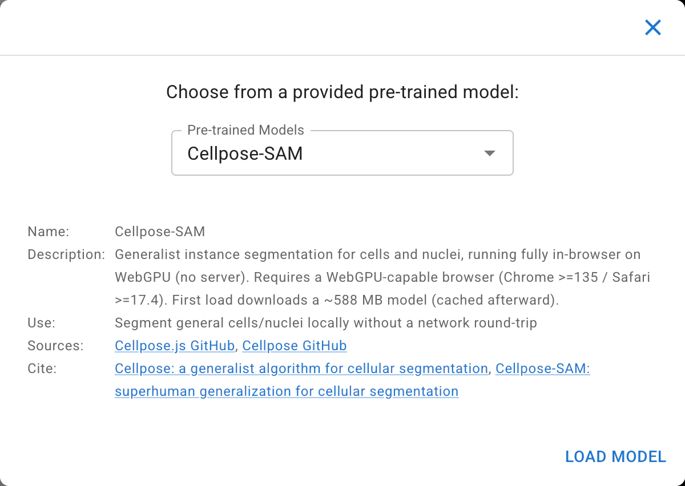
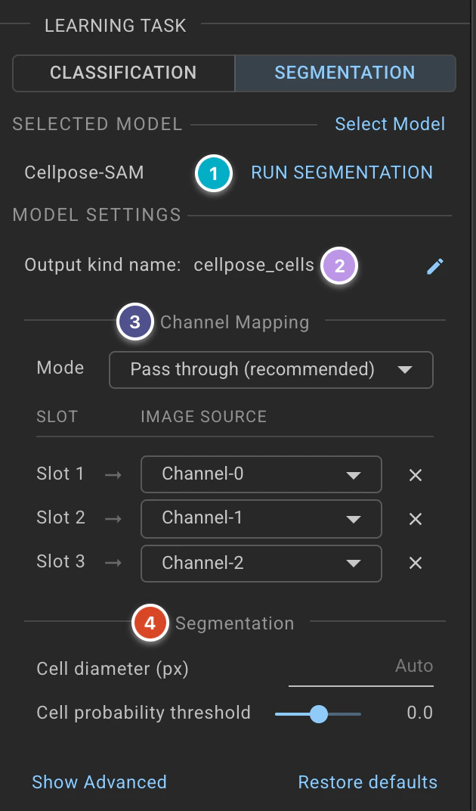
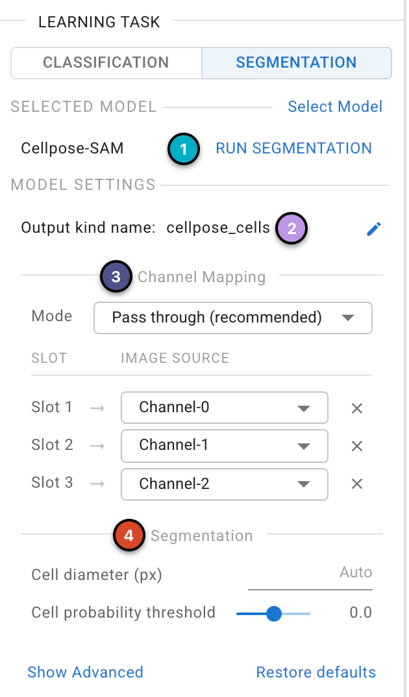

Segmentation#
The image segmentation module allows researchers to quickly identify cells or nuclei by selecting pre-trained segmentation models. Users can choose a model from the available options and apply it to images that are opened and selected.
Models run on your device
All of the segmentation models run locally in your browser, so your images are never sent to a server. The model files are downloaded the first time you load a model, and cached afterwards. Cellpose-SAM is a large model (about 588 MB) and requires a browser with WebGPU support (Chrome 135 or later, or Safari 17.4 or later), so its first load can take a while.
Overview#


Model Selection and Operations: Choose a model, and run it on the selected images.
Task Selection#
Switch between classification and segmentation tasks. The tasks will operate on the currently displayed Kind.
Model Selection#
Click Select Model to choose a pre-trained model.


Pre-trained Models
Piximi provides several segmentation models to choose from:
Cellpose-SAM
Stardist (Versatile) Fluorescence Nuclei
Stardist (Versatile) H&E Nuclei
Gland Segmentation
COCO-SSD
More information about the models can be found in the Segmentation Tutorial.
Model Details
Displays information about the model, its sources, the Kind it outputs, and a potential use-case.
Model Settings#
Once a model is loaded, its settings appear in the drawer.


Run Segmentation: Click this button to run the selected model on the images/objects of the displayed Kind. A new Kind will be created and populated with the identified objects. The name of the loaded model is shown to the left of the button. The button is disabled while a segmentation is already running, or if there is a problem with the current settings; hover over it to see the reason.
Output Kind Name: The name of the Kind the model will create for the objects it identifies. Click the pencil icon to rename it. Models that detect a fixed set of object classes (such as COCO-SSD) create one Kind per class, so their names cannot be edited.
Channel Mapping: Choose which channels of your image are handed to the model, in the order it receives them. Use the Image Source of each row to pick a channel. Every channel in the project is available, and the same channel can be sent to more than one input, which is useful when a model expects more channels than your image has. Some models accept a variable number of channels; use + Add channel to add another. For Cellpose-SAM, the Channel Mode option also lives here: Pass through (recommended) sends the selected channels as-is, whereas Legacy (chan / chan2) exposes the primary/secondary channel mapping of earlier Cellpose versions.
Additional Settings: Some models have extra settings. For example, Cellpose-SAM has:
Cell Diameter: The typical diameter of a cell in pixels. Leave it empty (Auto) to segment at the image’s native resolution, or set it when your cells are much larger or smaller than the model expects.
Cell Probability Threshold: The cutoff used to decide which pixels belong to a cell. Lower values give more and larger masks; higher values give fewer and smaller masks. The default of 0 is a good place to start.
Resample: Run the flow dynamics at the image’s source resolution for smoother mask outlines, at the cost of extra computation. Only has an effect when a cell diameter is set.
Click Restore defaults at any time to reset the model’s settings.
See our Segmentation Tutorial for usage information.